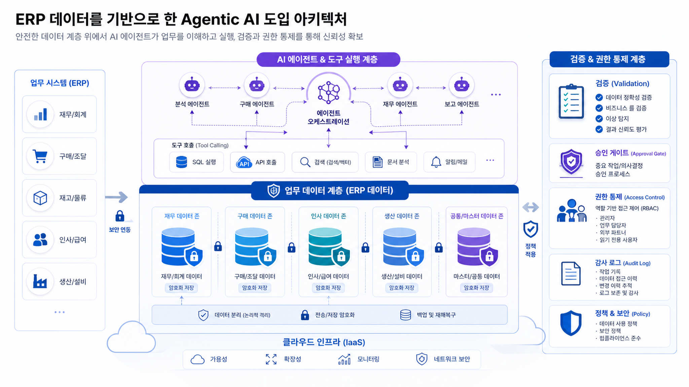
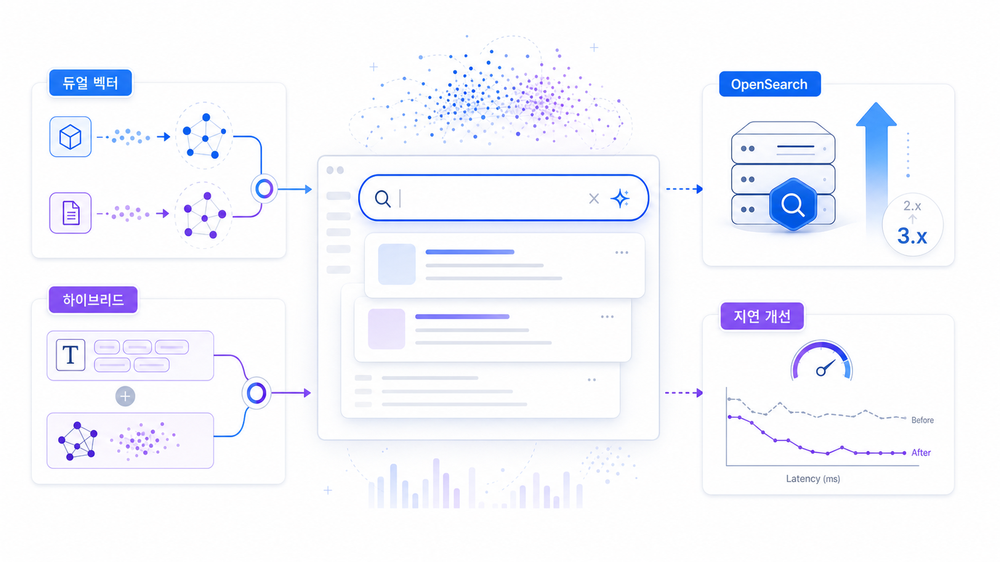
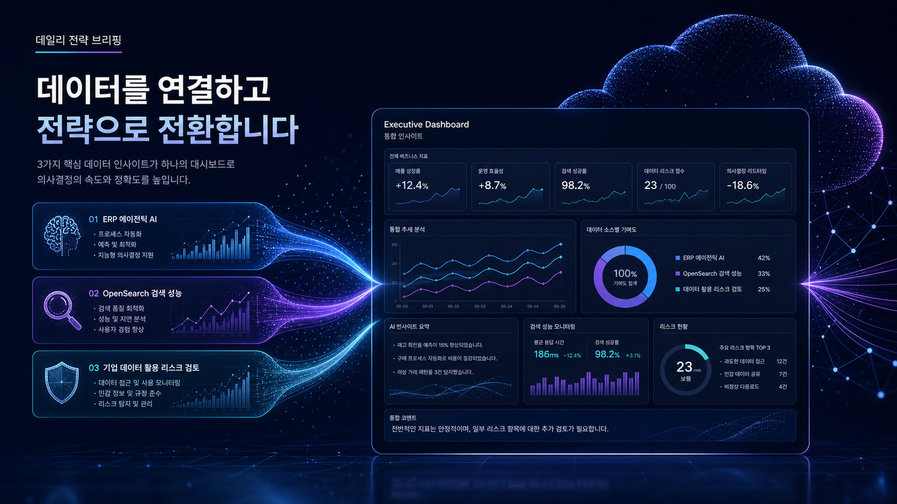

핵심 요약
오늘 신규 수집된 글은 모두 AWS Korea Tech Blog에서 확인되었습니다. 하나는 사내 ERP 데이터 기반 Agentic AI 구축 여정이고, 두 건은 미리캔버스의 Amazon OpenSearch Service 듀얼 벡터 검색 및 3.3 업그레이드 사례입니다. 공통 메시지는 특정 제품 홍보보다, 기업 내부 데이터와 검색 품질을 실제 시스템 요구사항으로 연결하는 방식에 있습니다.

수집 문서
수집 문서
사조시스템즈의 사내 ERP 데이터 기반 Agentic AI 구축 여정 – Strands Agents SDK와 Kiro 활용기
사조시스템즈 사례는 사내 ERP 데이터를 Agentic AI가 활용할 수 있도록 연결하는 구축 여정을 다룹니다. 원문에서는 Strands Agents SDK와 Kiro 활용이 핵심 맥락으로 제시됩니다.
- ERP 데이터 기반 질의·업무 지원 흐름을 Agentic AI와 연결합니다.
- 내부 시스템 접근권한과 도구 호출 범위를 분리해 검토할 필요가 있습니다.
- 원문만으로 정량 성과와 운영 조건은 확인 필요입니다.
원문 열기
수집 문서
Amazon OpenSearch 3.3 업그레이드로 미리캔버스의 검색 성능 개선
미리캔버스 사례는 Amazon OpenSearch 3.3 업그레이드를 통해 검색 성능 개선을 추진한 내용을 다룹니다. 버전 전환과 성능 검증이 함께 관찰됩니다.
- OpenSearch 업그레이드가 실제 서비스 검색 성능 개선 맥락에서 제시됩니다.
- 버전 호환성, 인덱스 구조, 지연시간 검증이 중요합니다.
- 원문 기준 세부 벤치마크 조건은 확인 필요입니다.
원문 열기
수집 문서
Amazon OpenSearch Service로 미리캔버스의 듀얼 벡터 검색 도입과 성능 최적화
미리캔버스 사례는 Amazon OpenSearch Service 기반 듀얼 벡터 검색 도입과 성능 최적화를 다룹니다. 검색 품질 개선을 위한 구조적 접근이 관찰됩니다.
- 듀얼 벡터 검색과 검색 품질 최적화가 핵심 주제입니다.
- 키워드·벡터·메타데이터 필터링을 함께 평가해야 합니다.
- 데이터셋 특성과 품질 평가 기준은 원문 기준 확인이 필요합니다.
원문 열기
핵심 트렌드 분석
업무 데이터의 Agent 활용
사조시스템즈 사례는 ERP 데이터가 단순 조회 대상이 아니라 Agent가 질문·탐색·도구 호출을 수행하는 업무 지식 계층으로 다뤄질 수 있음을 보여줍니다. 다만 원문만으로 성과 수치와 운영 조건은 추가 확인이 필요합니다.
검색 품질의 다층화
미리캔버스 사례 두 건은 Amazon OpenSearch Service 기반 검색에서 벡터 검색, 업그레이드, 성능 최적화가 한 묶음으로 검토되어야 함을 보여줍니다.

기술 변화의 의미
| 관찰 영역 | 근거 | 의사결정자가 확인할 점 |
|---|
| ERP Agentic AI | 사조시스템즈의 사내 ERP 데이터 기반 Agentic AI 구축 여정 | 데이터 권한, 시스템 연동 범위, Agent 행위 로그, 사용자 승인 조건 |
| 검색 고도화 | 미리캔버스의 듀얼 벡터 검색 및 OpenSearch 3.3 업그레이드 | 버전 호환성, 인덱스 전략, 지연시간, 검색 품질 평가 기준 |
기업 적용 관점
이번 수집 데이터에서 확인되는 적용 관점은 두 가지입니다. 첫째, Agent가 내부 시스템을 다룰 때는 모델 성능만으로 충분하지 않고, 원천 데이터 구조와 권한·감사 흐름이 함께 필요합니다. 둘째, 검색 품질 개선은 생성형 인공지능 답변 품질과도 연결되므로, 검색 인프라 업그레이드와 평가 체계를 분리하지 않는 편이 안전합니다.
한국 기업 관점 시사점
오늘 신규 글은 모두 한국 고객 또는 한국어 기술 사례 중심입니다. 따라서 국내 기업은 해외 기능 발표보다 실제 국내 업무 시스템, 콘텐츠 서비스 검색, 사내 데이터 활용 조건을 기준으로 참고할 수 있습니다. 단, 각 사례의 비용, 계정 구조, 리전 제약, 보안 승인 절차는 원문만으로 일반화하기 어렵기 때문에 확인 필요로 두어야 합니다.
실행 전략
이번 자료만을 기준으로 하면, 기업은 먼저 내부 데이터가 Agent나 검색 시스템에서 어떤 권한으로 읽히는지 식별하고, 검색·질의 품질을 측정할 최소 평가 세트를 마련하는 방식이 현실적입니다. 단계별 기간 로드맵은 이번 수집 데이터만으로는 근거가 부족해 작성하지 않았습니다.
리스크와 거버넌스 고려사항
- Agent가 ERP 또는 사내 시스템에 접근할 경우, 사용자 권한과 도구 권한이 일치하는지 검증해야 합니다.
- 벡터 검색 고도화는 편향된 데이터셋이나 부정확한 메타데이터에 민감할 수 있습니다.
- 서비스 업그레이드는 성능 개선과 동시에 호환성·운영 절차 변경 리스크를 동반합니다.

부록: 이미지 프롬프트 기록
이미지 프롬프트 1
목적: ERP 데이터 기반 Agentic AI 흐름
삽입 위치: 히어로 아래 핵심 메시지 뒤
권장 비율: 16:9
대체 텍스트: ERP 데이터와 Agentic AI 흐름을 추상적으로 보여주는 일러스트
이미지 프롬프트 2
목적: OpenSearch 검색 성능 개선
삽입 위치: 검색·데이터 섹션
권장 비율: 16:9
대체 텍스트: OpenSearch 기반 듀얼 벡터 검색과 성능 개선을 표현한 이미지
이미지 프롬프트 3
목적: 일일 전략 브리핑 종합
삽입 위치: 시사점/인사이트 리포트 앞
권장 비율: 16:9
대체 텍스트: 수집된 세 가지 AWS 블로그 흐름을 종합한 전략 브리핑 이미지